MGMT 47400: Predictive Analytics
Deep Learning
Overview
- Deep Learning
- PyTorch vs. TensorFlow
- PyTorch
- Neural Networks
- Single Layer Neural Network
- Fitting Neural Networks
- Convolutional Neural Network — CNN
- Document Classification
- Recurrent Neural Networks - RNN
- RNN for Document Classification
- RNN for Time Series Forecasting
- When to Use Deep Learning
This lecture content is inspired by and replicates the material from An Introduction to Statistical Learning.
Deep Learning
Deep Learning
- Early Rise (1980s)
- Neural networks first gained popularity.
- High levels of excitement, with dedicated conferences (e.g., NeurIPS, Snowbird).
- Neural networks first gained popularity.
- 1990s Shift
- Emergence of other methods (SVMs, Random Forests, Boosting).
- Neural networks receded into the background.
- Emergence of other methods (SVMs, Random Forests, Boosting).
- Resurgence (2010)
- Rebranded and refined under the banner of Deep Learning.
- By the 2020s, became extremely successful and widely adopted.
- Rebranded and refined under the banner of Deep Learning.
- Key Drivers of Success
- Rapid increases in computing power (GPUs, parallel computing).
- Availability of large-scale datasets.
- User-friendly deep learning libraries (e.g., TensorFlow, PyTorch).
- Rapid increases in computing power (GPUs, parallel computing).
Much of the credit goes to three pioneers and their students:
- Yann LeCun, Geoffrey Hinton, and Yoshua Bengio,
who received the 2019 ACM Turing Award for their work in Neural Networks.
- Yann LeCun, Geoffrey Hinton, and Yoshua Bengio,
AI Visionaries: Interviews
PyTorch vs. TensorFlow

What Are Deep Learning Frameworks?
- Deep learning frameworks reduce boilerplate code, handle tensor operations efficiently, and make it easier to prototype and iterate on new architectures.
- Software libraries designed to streamline the creation, training, and deployment of neural networks.
- Provide pre-built functions, automatic differentiation, and GPU/TPU support.
- Necessity: They allow researchers and developers to focus on model design rather than low-level implementation details.
PyTorch and Tensor Flow
What is PyTorch?
Developed primarily by Facebook (Meta) and released on September 2016.
Emphasizes a dynamic computation graph (eager execution).
Highly “Pythonic”: feels natural for Python developers.
Strong community presence in academia and research.
Why is PyTorch Necessary?
- Ease of Use & Debugging
- Evaluate expressions immediately without building a separate graph.
- More intuitive for experimenting with complex, innovative models.
- Evaluate expressions immediately without building a separate graph.
- Research Focus
- Quickly prototype new ideas and iterate.
- Active Ecosystem
- Libraries like torchvision, torchaudio, and others for specialized tasks.
How to begin
- https://pytorch.org/tutorials/beginner/basics/intro.html.
- There is also a YouTube Series (PyTorch Beginner Series) also here (Introduction to PyTorch)
What is TensorFlow?
- Developed primarily by Google and released in November 2015.
- Historically used a static graph approach (with an “eager mode” added later).
- Comes with extensive tools for deployment (mobile, web, and production).
- Large ecosystem with well-integrated components (e.g., TensorBoard, TFX, TensorFlow Lite).
Why is TensorFlow Necessary?
- Production-Ready
- Strong support for model serving at scale in enterprise environments.
- Comprehensive Ecosystem
- Visualization (TensorBoard), data processing (TFX), and model deployment pipelines.
- Visualization (TensorBoard), data processing (TFX), and model deployment pipelines.
- Cross-Platform & Hardware Support
- Easily deploy models to cloud infrastructures, mobile devices, and specialized hardware (TPUs).
How to begin
- https://www.tensorflow.org/tutorials. There is also a Quick Start!
Key Differences
| Aspect | PyTorch | TensorFlow |
|---|---|---|
| Computation Graph | Dynamic graph (eager execution by default). | Historically static graph with a build-and-execute phase (now supports eager execution). |
| Debugging & Development Style | More straightforward for Python developers, immediate error feedback. | Can be trickier to debug in graph mode; eager mode helps but is relatively newer. |
| Deployment & Production | TorchServe and growing enterprise support, but historically overshadowed by TensorFlow’s tools. | TensorFlow Serving, TensorFlow Lite, and easy Google Cloud integration. |
While the fundamental math and building blocks are similar, the biggest difference typically lies in how you prototype, debug, and deploy models.
Similarities
| Similarity | Description |
|---|---|
| Wide Range of Neural Network Layers | Convolutional, Recurrent, Transformers, etc. Both frameworks maintain robust libraries for standard and advanced layers. |
| Auto-Differentiation | No need to manually compute gradients; backpropagation is handled automatically. |
| GPU Acceleration | Both leverage CUDA (NVIDIA GPUs) or other backends to speed up training. |
| Rich Communities | Abundant tutorials, example code, pretrained models, and Q&A forums. |
Despite differing philosophies, PyTorch and TensorFlow share many core functionalities and have large, supportive user communities.
Comparison of Advantages and Disadvantages
| PyTorch | TensorFlow | |
|---|---|---|
| Advantages | - Intuitive, Pythonic Syntax: Feels like standard Python, reducing friction for experimentation - Dynamic Graph Execution: Simplifies debugging and model design - Research & Academia Favorite: widely used in cutting-edge papers |
- Static Graph Optimization: Graph-based execution can be highly optimized for speed and memory usage - Extensive Production Ecosystem: Includes TensorFlow Serving, TensorFlow Lite, TFX for data pipelines - Large Corporate Adoption: Backed by Google, widely used in enterprise settings |
| Disadvantages | - Deployment Maturity: Production tooling and ecosystem are improving but still behind TensorFlow - Smaller Enterprise Adoption: Historically overshadowed by TensorFlow’s widespread adoption |
- Learning Curve: The graph-based approach can be challenging for newcomers - Historically Less Intuitive: Older APIs and tutorials can be confusing, though Eager Mode improves usability |
Recommendations
Choose PyTorch if:
- Your focus is on rapid experimentation and academic research
- You prioritize a Pythonic workflow and easy debugging
- You prefer a dynamic graph approach (about it).
- You are working on cutting-edge models with high flexibility
- You value seamless interaction with Python libraries
Choose TensorFlow if:
- You need robust production and deployment pipelines
- You plan to integrate with Google Cloud services
- You require support for mobile/edge devices (e.g., TensorFlow Lite)
- You benefit from static graph optimization for performance
- You want an end-to-end ecosystem (TFX, TensorBoard, Serving)
PyTorch
Tensors in PyTorch
Datasets & DataLoaders
Datasets & DataLoaders
Transforms
Build the Neural Network
Build the Neural Network
We define our neural network by subclassing nn.Module, and initialize the neural network layers in __init__. Every nn.Module subclass implements the operations on input data in the forward method.
class NeuralNetwork(nn.Module):
def __init__(self):
super().__init__()
self.flatten = nn.Flatten()
self.linear_relu_stack = nn.Sequential(
nn.Linear(28*28, 512),
nn.ReLU(),
nn.Linear(512, 512),
nn.ReLU(),
nn.Linear(512, 10),
)
def forward(self, x):
x = self.flatten(x)
logits = self.linear_relu_stack(x)
return logitsWhat Are We Doing?
We are defining a neural network class using PyTorch. This network is designed to work with images, specifically 28×28 grayscale images like those from the FashionMNIST dataset. The network will output 10 values, one for each digit from 0 to 9.
Step-by-Step Breakdown
class NeuralNetwork(nn.Module):- We create a new neural network class called
NeuralNetwork. It inherits from PyTorch’snn.Module, which is the base class for all neural network models.
- We create a new neural network class called
def __init__(self):andsuper().__init__()__init__is the constructor. It’s run when we create the model.super().__init__()tells Python to also run the initialization code from the parent class (nn.Module). This is required for PyTorch to keep track of everything inside the model.
self.flatten = nn.Flatten():- changes the input from a 2D image (28×28) into a 1D vector (784 values), which is easier for linear layers to handle.
Build the Neural Network
We define our neural network by subclassing nn.Module, and initialize the neural network layers in __init__. Every nn.Module subclass implements the operations on input data in the forward method.
class NeuralNetwork(nn.Module):
def __init__(self):
super().__init__()
self.flatten = nn.Flatten()
self.linear_relu_stack = nn.Sequential(
nn.Linear(28*28, 512),
nn.ReLU(),
nn.Linear(512, 512),
nn.ReLU(),
nn.Linear(512, 10),
)
def forward(self, x):
x = self.flatten(x)
logits = self.linear_relu_stack(x)
return logitsDefine a sequence of layers:
Here we build the main body of the neural network.
self.linear_relu_stack = nn.Sequential(
nn.Linear(28*28, 512),
nn.ReLU(),
nn.Linear(512, 512),
nn.ReLU(),
nn.Linear(512, 10),
)In most contexts when we say “how many layers?” we refer to the learnable ones. So this network has three fully‑connected (Linear) layers, with ReLU activations in between.
- You can think of the linear layer as a filter that projects the image into a new space with 512 dimensions. These new values are not pixels anymore, but rather abstract features learned by the network.
Build the Neural Network
We define our neural network by subclassing nn.Module, and initialize the neural network layers in __init__. Every nn.Module subclass implements the operations on input data in the forward method.
class NeuralNetwork(nn.Module):
def __init__(self):
super().__init__()
self.flatten = nn.Flatten()
self.linear_relu_stack = nn.Sequential(
nn.Linear(28*28, 512),
nn.ReLU(),
nn.Linear(512, 512),
nn.ReLU(),
nn.Linear(512, 10),
)
def forward(self, x):
x = self.flatten(x)
logits = self.linear_relu_stack(x)
return logitsDefine a sequence of layers:
- First layer
nn.Linear(28*28, 512): takes the 784 values from the image and transforms them into 512 values. ALinear(784, 512)layer performs:- A matrix multiplication between the input vector (length 784) and a weight matrix of size
[784 × 512], followed by adding a bias vector of length 512. - Mathematically: \[ \text{output} = x \cdot W + b \]
xis the input vector: shape[784]Wis the weight matrix: shape[784 × 512]bis the bias vector: shape[512]- The result (
output) is a new vector of shape[512]
- A matrix multiplication between the input vector (length 784) and a weight matrix of size
- Each of the 512 output values is a linear combination of all 784 pixel values in the input image. By default, PyTorch initializes weights using Kaiming Uniform Initialization (a variant of He initialization), which works well with ReLU activation functions.
Build the Neural Network
We define our neural network by subclassing nn.Module, and initialize the neural network layers in __init__. Every nn.Module subclass implements the operations on input data in the forward method.
class NeuralNetwork(nn.Module):
def __init__(self):
super().__init__()
self.flatten = nn.Flatten()
self.linear_relu_stack = nn.Sequential(
nn.Linear(28*28, 512),
nn.ReLU(),
nn.Linear(512, 512),
nn.ReLU(),
nn.Linear(512, 10),
)
def forward(self, x):
x = self.flatten(x)
logits = self.linear_relu_stack(x)
return logitsDefine a sequence of layers:
nn.ReLU(): applies the ReLU activation function, which keeps positive numbers and turns negative numbers into zero. This adds non-linearity to the model.Second layer
nn.Linear(512, 512): takes those 512 values and again outputs 512 values. This is a hidden layer, helping the model learn more complex patterns.nn.ReLU(): Another non-linear transformation.Third (Final) layer:
nn.Linear(512, 10): takes the 512 values and produces 10 output values.- These are called logits, and each one corresponds to a digit class (0 to 9).
Build the Neural Network
We define our neural network by subclassing nn.Module, and initialize the neural network layers in __init__. Every nn.Module subclass implements the operations on input data in the forward method.
class NeuralNetwork(nn.Module):
def __init__(self):
super().__init__()
self.flatten = nn.Flatten()
self.linear_relu_stack = nn.Sequential(
nn.Linear(28*28, 512),
nn.ReLU(),
nn.Linear(512, 512),
nn.ReLU(),
nn.Linear(512, 10),
)
def forward(self, x):
x = self.flatten(x)
logits = self.linear_relu_stack(x)
return logitsDefine a sequence of layers:
forward(self, x): This is the forward pass, the function that runs when we send data through the model.Step-by-step:
x = self.flatten(x): Convert the 28×28 image into a 1D tensor with 784 values.logits = self.linear_relu_stack(x): Pass the input through the series of layers.return logits: Output the final predictions (raw scores for each class).
- In summary this neural network:
- Takes an image (28×28) as input,
- Flattens it into a vector,
- Passes it through two fully connected layers with ReLU,
- Outputs a vector of size 10 (one for each digit)
Build the Neural Network
We create an instance of NeuralNetwork, and move it to the device, and print its structure.
model = NeuralNetwork().to(device)
print(model)To use the model, we pass it the input data.
Example:
X = torch.rand(1, 28, 28, device=device)
logits = model(X)
pred_probab = nn.Softmax(dim=1)(logits)
y_pred = pred_probab.argmax(1)
print(f"Predicted class: {y_pred}")
# To see the image:
import torch
import matplotlib.pyplot as plt
# Remove the batch dimension (1, 28, 28) → (28, 28)
image = X[0]
# Plot the image
plt.imshow(image, cmap='gray') # Use 'gray' colormap for grayscale image
plt.title("Random 28x28 Image")
plt.axis('off')
plt.show()torch.rand(1, 28, 28, device=device): Creates a random image with shape[1, 28, 28]1is the batch size (just one image)28×28is the image dimensiondevice=deviceensures the tensor goes to CPU or GPU (wherever the model is)
# To see tensor:
print(X)Let’s say the tensor shown is:
X = torch.tensor([[
[0.1177, 0.2669, 0.6367, 0.6148, 0.3085, ...], # row 0
[0.8672, 0.3645, 0.4822, 0.9566, 0.8999, ...], # row 1
...
]])- This is a 3D tensor of shape
[1, 28, 28]:- The first dimension
1is the batch size, - The next two are height and width of the image.
- The first dimension
- The full index of
0.2669in the 3D tensor is:X[0, 0, 1].0→ first (and only) image in the batch0→ first row of the image1→ second column in that row
Build the Neural Network
We create an instance of NeuralNetwork, and move it to the device, and print its structure.
model = NeuralNetwork().to(device)
print(model)To use the model, we pass it the input data.
Example:
X = torch.rand(1, 28, 28, device=device)
logits = model(X)
pred_probab = nn.Softmax(dim=1)(logits)
y_pred = pred_probab.argmax(1)
print(f"Predicted class: {y_pred}")
# To see the image:
import torch
import matplotlib.pyplot as plt
# Remove the batch dimension (1, 28, 28) → (28, 28)
image = X[0]
# Plot the image
plt.imshow(image, cmap='gray') # Use 'gray' colormap for grayscale image
plt.title("Random 28x28 Image")
plt.axis('off')
plt.show()logits = model(X): This calls the model with inputX.- Behind the scenes, it runs
model.forward(X) - Output: a vector of 10 values (called logits), one for each class (digits 0 through 9)
- Behind the scenes, it runs
Note: We do not call
model.forward()directly —PyTorchmanages hooks and gradients when we usemodel(X)pred_probab = nn.Softmax(dim=1)(logits): Applies softmax to the raw output logits- Softmax turns logits into probabilities (values between 0 and 1 that sum to 1)
dim=1means we apply softmax across the 10 output class values (not across the batch)
y_pred = pred_probab.argmax(1): Picks the index of the largest probability, i.e., the predicted classargmax(1)returns the class with the highest probability from each row (here we have just one row)
print(f"Predicted class: {y_pred}"): Prints the predicted digit class (0 through 9)
Automatic Differentiation with torch.autograd
Optimizing Model Parameters
Save and Load the Model
Your turn!
Introduction to PyTorch - YouTube Series
Neural Networks
Neural Networks - Video
Single Layer Neural Network
Single Layer Neural Network
\[ \begin{align*} f(X) &= \beta_0 + \sum_{k=1}^{K} \beta_k h_k(X) \\ &= \beta_0 + \sum_{k=1}^{K} \beta_k g\left(w_{k0} + \sum_{j=1}^{p} w_{kj} X_j \right). \end{align*} \]
Network Diagram of Single Layer Neural Network
Single Layer Neural Network: Introduction and Layers Overview
\[ \begin{align*} f(X) &= \beta_0 + \sum_{k=1}^{K} \beta_k h_k(X) \\ &= \beta_0 + \sum_{k=1}^{K} \beta_k g\left(w_{k0} + \sum_{j=1}^{p} w_{kj} X_j \right). \end{align*} \]
Network Diagram of Single Layer Neural Network
Neural networks are often displayed using network diagrams, as shown in the figure.
- Input Layer (Orange Circles):
- \(X_1, X_2, X_3, X_4\)
- These are observed variables from the dataset.
- Hidden Layer (Blue Circles):
- \(A_1, A_2, A_3, A_4, A_5\)
- These are transformations (activations) computed from the inputs.
- Output Layer (Pink Circle):
- \(f(X) \to Y\)
- \(Y\) is also observed, e.g., a label or continuous response.
Single Layer Neural Network: Observed vs. Latent
\[ \begin{align*} f(X) &= \beta_0 + \sum_{k=1}^{K} \beta_k h_k(X) \\ &= \beta_0 + \sum_{k=1}^{K} \beta_k g\left(w_{k0} + \sum_{j=1}^{p} w_{kj} X_j \right). \end{align*} \]
Network Diagram of Single Layer Neural Network
Where is the observed data?
- \(X_j\) are observed (the input features).
- \(Y\) is observed (the response or label).
- The hidden units (\(A_k\)) are not observed; they’re learned transformations.
Single Layer Neural Network: Training the Network
\[ \begin{align*} f(X) &= \beta_0 + \sum_{k=1}^{K} \beta_k h_k(X) \\ &= \beta_0 + \sum_{k=1}^{K} \beta_k g\left(w_{k0} + \sum_{j=1}^{p} w_{kj} X_j \right). \end{align*} \]
Network Diagram of Single Layer Neural Network
The network learns all weights \(w_{kj}, w_{k0}, \beta_k, \beta_0\) during training.
Objective: predict \(Y\) from \(X\) accurately.
Key insight: Hidden layer learns useful transformations on the fly to help approximate the true function mapping \(X\) to \(Y\).
Single Layer Neural Network: Details
\(A_k = h_k(X) = g(w_{k0} + \sum_{j=1}^{p} w_{kj} X_j)\) are called the activations in the hidden layer. We can think of it as a non-linear tranformation of a linear function.
\(g(z)\) is called the activation function. Two popular activation functions are: the sigmoid and rectified linear (ReLU).
Activation functions in hidden layers are typically nonlinear; otherwise, the model collapses to a linear model.
So the activations are like derived features — nonlinear transformations of linear combinations of the features.
The model is fit by minimizing \(\sum_{i=1}^{n} (y_i - f(x_i))^2\) (e.g., for regression).
NN Example: MNIST Digits
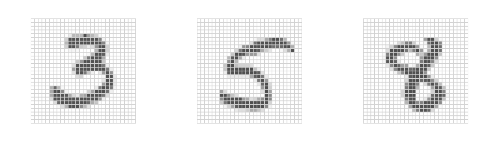
Handwritten digits
\(28 \times 28\) grayscale images
60K train, 10K test images
Features are the 784 pixel grayscale values \(\in (0, 255)\)
Labels are the digit class \(0\text{–}9\)
Goal: Build a classifier to predict the image class.
We build a two-layer network with:
256 units at the first layer,
128 units at the second layer, and
10 units at the output layer.
Along with intercepts (called biases), there are 235,146 parameters (referred to as weights).
Fitting Neural Networks
Gradient Descent - Video
Backpropagation Intuition - Video
Backpropagation Calculus - Video
Fitting Neural Networks
\[ \min_{\{w_k\}_{1}^K, \beta} \frac{1}{2} \sum_{i=1}^n \left(y_i - f(x_i)\right)^2, \quad \text{where} \]
\[ f(x_i) = \beta_0 + \sum_{k=1}^K \beta_k g\left(w_{k0} + \sum_{j=1}^p w_{kj} x_{ij}\right). \]
This problem is difficult because the objective is non-convex.
Despite this, effective algorithms have evolved that can optimize complex neural network problems efficiently.
Non Convex Functions and Gradient Descent
Let \(R(\theta) = \frac{1}{2} \sum_{i=1}^n (y_i - f_\theta(x_i))^2\) with \(\theta = (\{w_k\}_{1}^K, \beta)\).
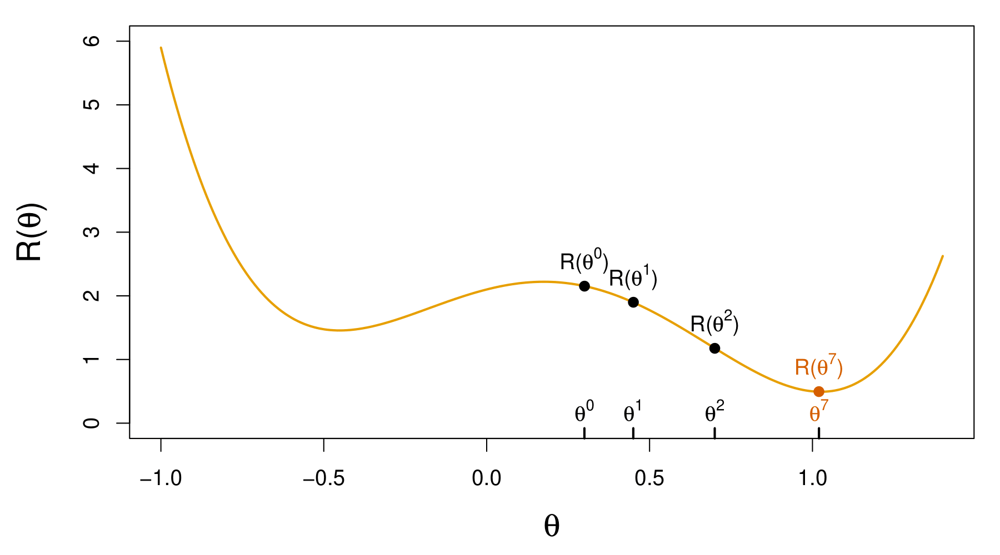
Start with a guess \(\theta^0\) for all the parameters in \(\theta\), and set \(t = 0\).
Iterate until the objective \(R(\theta)\) fails to decrease:
Find a vector \(\delta\) that reflects a small change in \(\theta\), such that \(\theta^{t+1} = \theta^t + \delta\) reduces the objective; i.e., \(R(\theta^{t+1}) < R(\theta^t)\).
Set \(t \gets t + 1\).
Gradient Descent Continued
In this simple example, we reached the global minimum.
If we had started a little to the left of \(\theta^0\), we would have gone in the other direction and ended up in a local minimum.
Although \(\theta\) is multi-dimensional, we have depicted the process as one-dimensional. It is much harder to identify whether one is in a local minimum in high dimensions.
How to find a direction \(\delta\) that points downhill? We compute the gradient vector: \[ \nabla R(\theta^t) = \frac{\partial R(\theta)}{\partial \theta} \bigg|_{\theta = \theta^t} \]
i.e., the vector of partial derivatives at the current guess \(\theta^t\).
The gradient points uphill, so our update is \(\delta = - \rho \nabla R(\theta^t)\) or \[ \theta^{t+1} \gets \theta^t - \rho \nabla R(\theta^t), \] where \(\rho\) is the learning rate (typically small, e.g., \(\rho = 0.001\)).
Gradients and Backpropagation
\[ R(\theta) = \sum_{i=1}^n R_i(\theta) \text{ is a sum, so gradient is sum of gradients.} \]
\[ R_i(\theta) = \frac{1}{2}(y_i - f_\theta(x_i))^2 = \frac{1}{2} \left( y_i - \beta_0 - \sum_{k=1}^K \beta_k g\left( w_{k0} + \sum_{j=1}^p w_{kj} x_{ij} \right) \right)^2 \]
For ease of notation, let
\[ z_{ik} = w_{k0} + \sum_{j=1}^p w_{kj} x_{ij}. \]
Backpropagation uses the chain rule for differentiation:
\[ \frac{\partial R_i(\theta)}{\partial \beta_k} = \frac{\partial R_i(\theta)}{\partial f_\theta(x_i)} \cdot \frac{\partial f_\theta(x_i)}{\partial \beta_k} = -(y_i - f_\theta(x_i)) \cdot g(z_{ik}). \]
\[ \frac{\partial R_i(\theta)}{\partial w_{kj}} = \frac{\partial R_i(\theta)}{\partial f_\theta(x_i)} \cdot \frac{\partial f_\theta(x_i)}{\partial g(z_{ik})} \cdot \frac{\partial g(z_{ik})}{\partial z_{ik}} \cdot \frac{\partial z_{ik}}{\partial w_{kj}} = -(y_i - f_\theta(x_i)) \cdot \beta_k \cdot g'(z_{ik}) \cdot x_{ij}. \]
Tricks of the Trade
- Slow learning. Gradient descent is slow, and a small learning rate \(\rho\) slows it even further. With early stopping, this is a form of regularization.
- Stochastic gradient descent. Rather than compute the gradient using all the data, use a small minibatch drawn at random at each step. E.g. for MNIST data, with \(n = 60K\), we use minibatches of 128 observations.
- An epoch is a count of iterations and amounts to the number of minibatch updates such that \(n\) samples in total have been processed; i.e. \(60K/128 \approx 469\) for MNIST.
- Regularization. Ridge and lasso regularization can be used to shrink the weights at each layer. Two other popular forms of regularization are dropout and augmentation, discussed next.
Dropout Learning
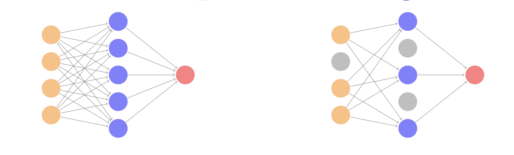
At each Stochastic Gradient Descent (SGD) update, randomly remove units with probability \(\phi\), and scale up the weights of those retained by \(1/(1-\phi)\) to compensate.
In simple scenarios like linear regression, a version of this process can be shown to be equivalent to ridge regularization.
As in ridge, the other units stand in for those temporarily removed, and their weights are drawn closer together.
Similar to randomly omitting variables when growing trees in random forests.
Ridge and Data Augmentation
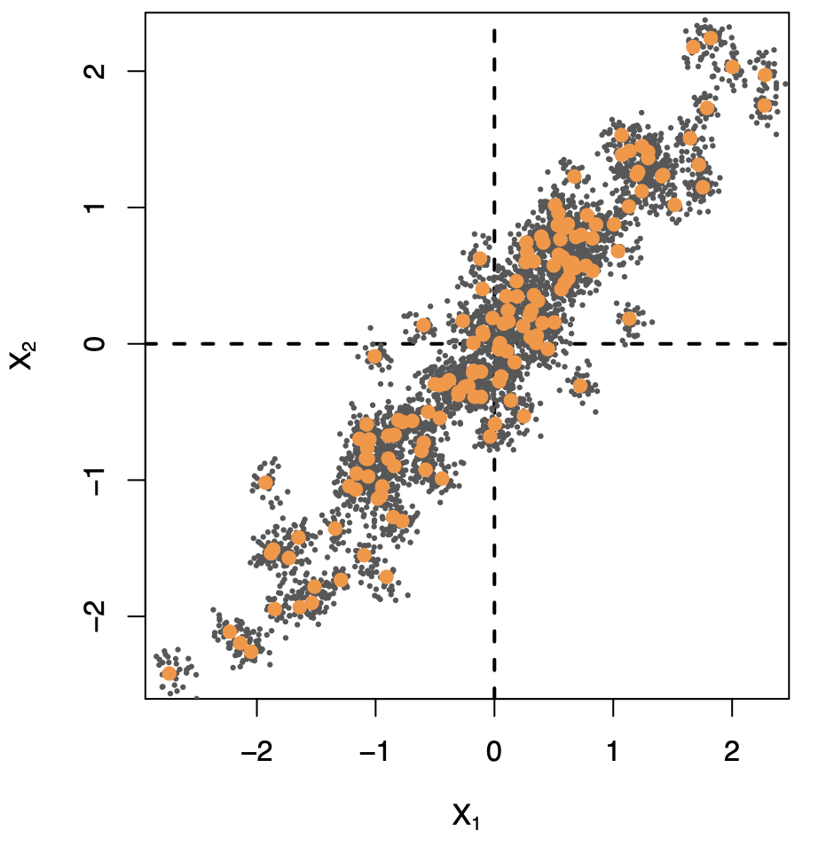
Make many copies of each \((x_i, y_i)\) and add a small amount of Gaussian noise to the \(x_i\) — a little cloud around each observation — but leave the copies of \(y_i\) alone!
This makes the fit robust to small perturbations in \(x_i\), and is equivalent to ridge regularization in an OLS setting.
Data Augmentation on the Fly
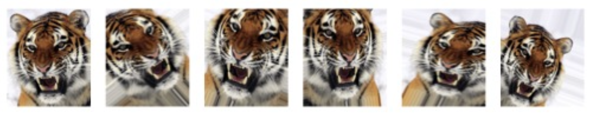
Data augmentation is especially effective with SGD, here demonstrated for a CNN and image classification.
Natural transformations are made of each training image when it is sampled by SGD, thus ultimately making a cloud of images around each original training image.
The label is left unchanged — in each case still tiger.
Improves performance of CNN and is similar to ridge.
Double Descent
With neural networks, it seems better to have too many hidden units than too few.
Likewise more hidden layers better than few.
Running stochastic gradient descent till zero training error often gives good out-of-sample error.
Increasing the number of units or layers and again training till zero error sometimes gives even better out-of-sample error.
What happened to overfitting and the usual bias-variance trade-off?
- Belkin, Hsu, Ma, and Mandal (arXiv 2018) Reconciling Modern Machine Learning and the Bias-Variance Trade-off.
The Double-Descent Error Curve
When \(d \leq 20\), model is OLS, and we see usual bias-variance trade-off.
When \(d > 20\), we revert to minimum-norm. As \(d\) increases above 20, \(\sum_{j=1}^d \hat{\beta}_j^2\) decreases since it is easier to achieve zero error, and hence less wiggly solutions.
Less Wiggly Solutions
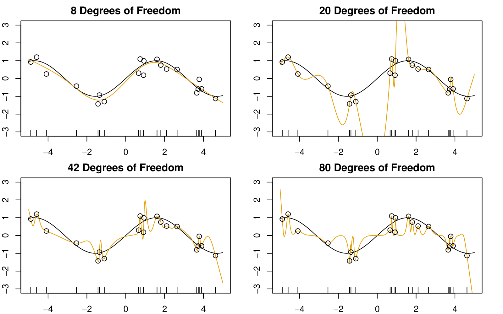
To achieve a zero-residual solution with \(d = 20\) is a real stretch!
Easier for larger \(d\).
Some Facts
In a wide linear model (\(p \gg n\)) fit by least squares, SGD with a small step size leads to a minimum norm zero-residual solution.
Stochastic gradient flow — i.e. the entire path of SGD solutions — is somewhat similar to ridge path.
By analogy, deep and wide neural networks fit by SGD down to zero training error often give good solutions that generalize well.
In particular cases with high signal-to-noise ratio — e.g. image recognition — are less prone to overfitting; the zero-error solution is mostly signal!
Convolutional Neural Network — CNN
CNN: Introduction
Neural networks rebounded around 2010 with big successes in image classification.
Around that time, massive databases of labeled images were being accumulated, with ever-increasing numbers of classes.
The CIFAR100 Database
The figure shows 75 images drawn from the CIFAR100 database.
This database consists of 60,000 images labeled according to 20 superclasses (e.g. aquatic mammals), with five classes per superclass (beaver, dolphin, otter, seal, whale).
Each image has a resolution of 32 × 32 pixels, with three eight-bit numbers per pixel representing red, green, and blue. The numbers for each image are organized in a three-dimensional array called a feature map.
The first two axes are spatial (both 32-dimensional), and the third is the channel axis, representing the three (blue, green or red) colors.
There is a designated training set of 50,000 images, and a test set of 10,000.
The Convolutional Network Hierarchy
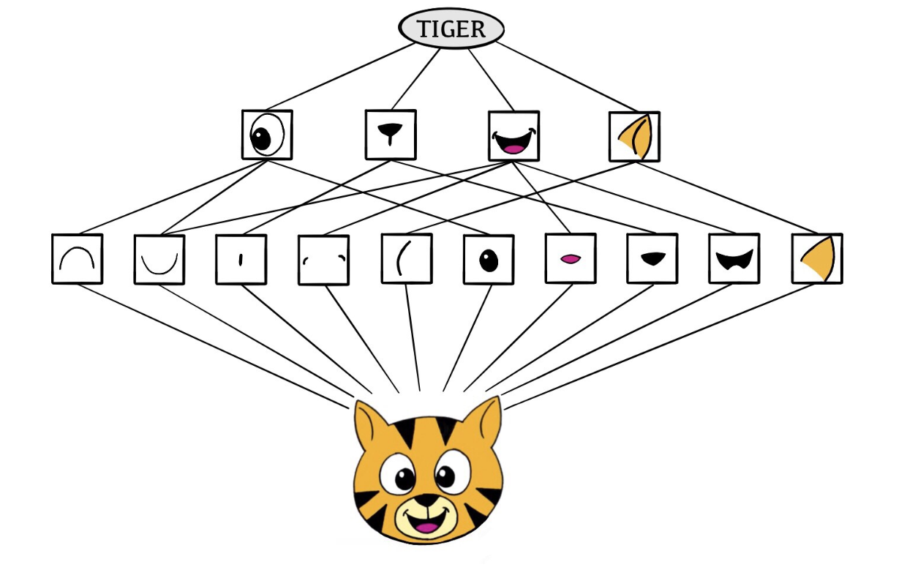
CNNs mimic, to some degree, how humans classify images, by recognizing specific features or patterns anywhere in the image that distinguish each particular object class.
The network first identifies low-level features in the input image, such as small edges or patches of color.
These low-level features are then combined to form higher-level features, such as parts of ears or eyes. Eventually, the presence or absence of these higher-level features contributes to the probability of any given output class.
This hierarchical construction is achieved by combining two specialized types of hidden layers: convolution layers and pooling layers:
Convolution layers search for instances of small patterns in the image.
Pooling layers downsample these results to select a prominent subset.
To achieve state-of-the-art results, contemporary neural network architectures often use many convolution and pooling layers.
Convolution Layer
A convolution layer is made up of a large number of convolution filters, each of which is a template that determines whether a particular local feature is present in an image.
A convolution filter relies on a very simple operation, called a convolution, which basically amounts to repeatedly multiplying matrix elements and then adding the results. \[ \text{Input Image} = \begin{bmatrix} a & b & c \\ d & e & f \\ g & h & i \\ j & k & l \end{bmatrix} \quad \text{Convolution Filter} = \begin{bmatrix} \alpha & \beta \\ \gamma & \delta \end{bmatrix}. \]
When we convolve the image with the filter, we get the result: \[ \text{Convolved Image} = \begin{bmatrix} a\alpha + b\beta + d\gamma + e\delta & b\alpha + c\beta + e\gamma + f\delta \\ d\alpha + e\beta + g\gamma + h\delta & e\alpha + f\beta + h\gamma + i\delta \\ g\alpha + h\beta + j\gamma + k\delta & h\alpha + i\beta + k\gamma + l\delta \end{bmatrix}. \]
the convolution filter is applied to every 2 × 2 submatrix of the original image in order to obtain the convolved image.
If a 2 × 2 submatrix of the original image resembles the convolution filter, then it will have a large value in the convolved image; otherwise, it will have a small value. Thus, the convolved image highlights regions of the original image that resemble the convolution filter.
The filter is itself an image and represents a small shape, edge, etc.
The filters are learned during training.
Convolution Example
The idea of convolution with a filter is to find common patterns that occur in different parts of the image.
The two filters shown here highlight vertical and horizontal stripes.
The result of the convolution is a new feature map.
Since images have three color channels, the filter does as well: one filter per channel, and dot-products are summed.
The weights in the filters are learned by the network.
Pooling Layer
A pooling layer provides a way to condense a large image into a smaller summary image.
\[ \text{Max pool} \begin{bmatrix} 1 & 2 & 5 & 3 \\ 3 & 0 & 1 & 2 \\ 2 & 1 & 3 & 4 \\ 1 & 1 & 2 & 0 \end{bmatrix} \rightarrow \begin{bmatrix} 3 & 5 \\ 2 & 4 \end{bmatrix} \]
Each non-overlapping \(2 \times 2\) block is replaced by its maximum.
This sharpens the feature identification.
Allows for locational invariance.
Reduces the dimension by a factor of 4 — i.e., factor of 2 in each dimension.
Architecture of a CNN
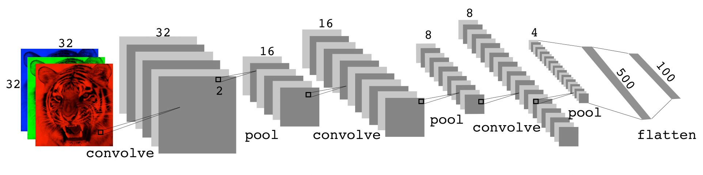
Many convolve + pool layers.
Filters are typically small, e.g., each channel \(3 \times 3\).
Each filter creates a new channel in the convolution layer.
As pooling reduces size, the number of filters/channels is typically increased.
Number of layers can be very large.
E.g., resnet50 trained on imagenet 1000-class image database has 50 layers!
Data Augmentation
An additional important trick used with image modeling is data augmentation.
Essentially, each training image is replicated many times, with each replicate randomly distorted in a natural way such that human recognition is unaffected.
Typical distortions are zoom, horizontal and vertical shift, shear, small rotations, and in this case horizontal flips.
At face value this is a way of increasing the training set considerably with somewhat different examples, and thus protects against overfitting.
In fact we can see this as a form of regularization: we build a cloud of images around each original image, all with the same label.
CNN Example: Pretrained Networks to Classify Images
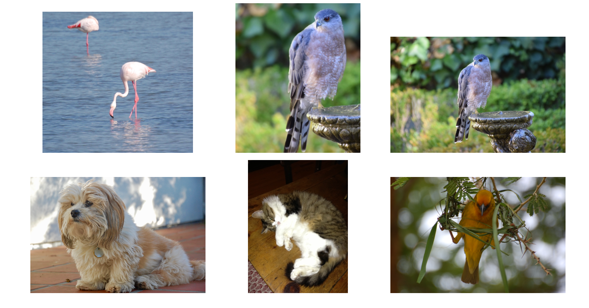
Here we use the 50-layer resnet50 network trained on the 1000-class imagenet corpus to classify some photographs.
Document Classification
Document Classification: IMDB Movie Reviews
The IMDB corpus consists of user-supplied movie ratings for a large collection of movies. Each has been labeled for sentiment as positive or negative. Here is the beginning of a negative review:
This has to be one of the worst films of the 1990s. When my friends & I were watching this film (being the target audience it was aimed at) we just sat & watched the first half an hour with our jaws touching the floor at how bad it really was. The rest of the time, everyone else in the theater just started talking to each other, leaving or generally crying into their popcorn …
We have labeled training and test sets, each consisting of 25,000 reviews, and each balanced with regard to sentiment.
Goal: We want to build a classifier to predict the sentiment of a review.
Featurization: Bag-of-Words
Documents have different lengths and consist of sequences of words. How do we create features \(X\) to characterize a document?
From a dictionary, identify the 10K most frequently occurring words.
Create a binary vector of length \(p = 10K\) for each document, and score a 1 in every position that the corresponding word occurred.
With \(n\) documents, we now have an \(n \times p\) sparse feature matrix \(\mathbf{X}\).
We compare a lasso logistic regression model to a two-hidden-layer neural network on the next slide. (No convolutions here!)
Bag-of-words are unigrams. We can instead use bigrams (occurrences of adjacent word pairs) and, in general, m-grams.
Document Classification Example: Lasso versus Neural Network — IMDB Reviews
- Simpler lasso logistic regression model works as well as neural network in this case.
Recurrent Neural Networks - RNN
Recurrent Neural Networks - RNN
Often data arise as sequences:
Documents are sequences of words, and their relative positions have meaning.
Time-series such as weather data or financial indices.
Recorded speech or music.
RNNs build models that take into account this sequential nature of the data and build a memory of the past.
The feature for each observation is a sequence of vectors \(X = \{X_1, X_2, \ldots, X_L\}\).
The target \(Y\) is often of the usual kind — e.g., a single variable such as Sentiment, or a one-hot vector for multiclass.
However, \(Y\) can also be a sequence, such as the same document in a different language.
Simple Recurrent Neural Network Architecture
The hidden layer is a sequence of vectors \(A_\ell\), receiving as input \(X_\ell\) as well as \(A_{\ell-1}\). \(A_\ell\) produces an output \(O_\ell\).
The same weights \(\mathbf{W}\), \(\mathbf{U}\), and \(\mathbf{B}\) are used at each step in the sequence — hence the term recurrent.
The \(A_\ell\) sequence represents an evolving model for the response that is updated as each element \(X_\ell\) is processed.
RNN in Detail
Suppose \(X_\ell = (X_{\ell1}, X_{\ell2}, \ldots, X_{\ell p})\) has \(p\) components, and \(A_\ell = (A_{\ell1}, A_{\ell2}, \ldots, A_{\ell K})\) has \(K\) components. Then the computation at the \(k\)-th components of hidden unit \(A_\ell\) is:
\[ A_{\ell k} = g\left(w_{k0} + \sum_{j=1}^{p} w_{kj} X_{\ell j} + \sum_{s=1}^{K} u_{ks} A_{\ell-1,s}\right) \]
\[ O_\ell = \beta_0 + \sum_{k=1}^{K} \beta_k A_{\ell k} \]
Often we are concerned only with the prediction \(O_L\) at the last unit. For squared error loss, and \(n\) sequence/response pairs, we would minimize:
\[ \sum_{i=1}^{n} (y_i - o_{iL})^2 = \sum_{i=1}^{n} \left(y_i - \left(\beta_0 + \sum_{k=1}^{K} \beta_k g\left(w_{k0} + \sum_{j=1}^{p} w_{kj} x_{iL,j} + \sum_{s=1}^{K} u_{ks} a_{i,L-1,s}\right)\right)\right)^2 \]
RNN for Document Classification
RNN for Document Classification
The document feature is a sequence of words \(\{\mathcal{W}_\ell\}_{1}^{L}\). We typically truncate/pad the documents to the same number \(L\) of words (we use \(L = 500\)).
Each word \(\mathcal{W}_\ell\) is represented as a one-hot encoded binary vector \(X_\ell\) (dummy variable) of length \(10K\), with all zeros and a single one in the position for that word in the dictionary.
This results in an extremely sparse feature representation and would not work well.
Instead, we use a lower-dimensional pretrained word embedding matrix \(\mathbf{E}\) (\(m \times 10K\), next slide).
This reduces the binary feature vector of length \(10K\) to a real feature vector of dimension \(m \ll 10K\) (e.g., \(m\) in the low hundreds).
Word Embedding - RNN Example: IMDB Reviews
Review:
this is one of the best films actually the best I have ever seen the film starts one fall day…
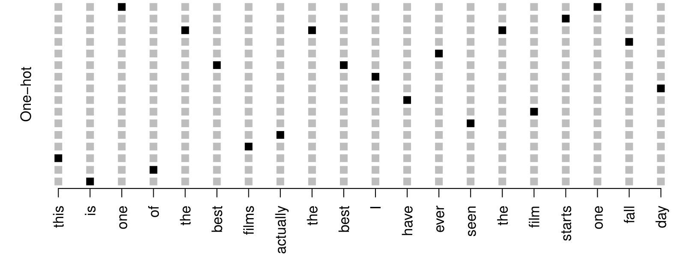
Embeddings are pretrained on very large corpora of documents, using methods similar to principal components. word2vec and GloVe are popular.
RNN for Time Series Forecasting
RNN: Time Series Forecasting
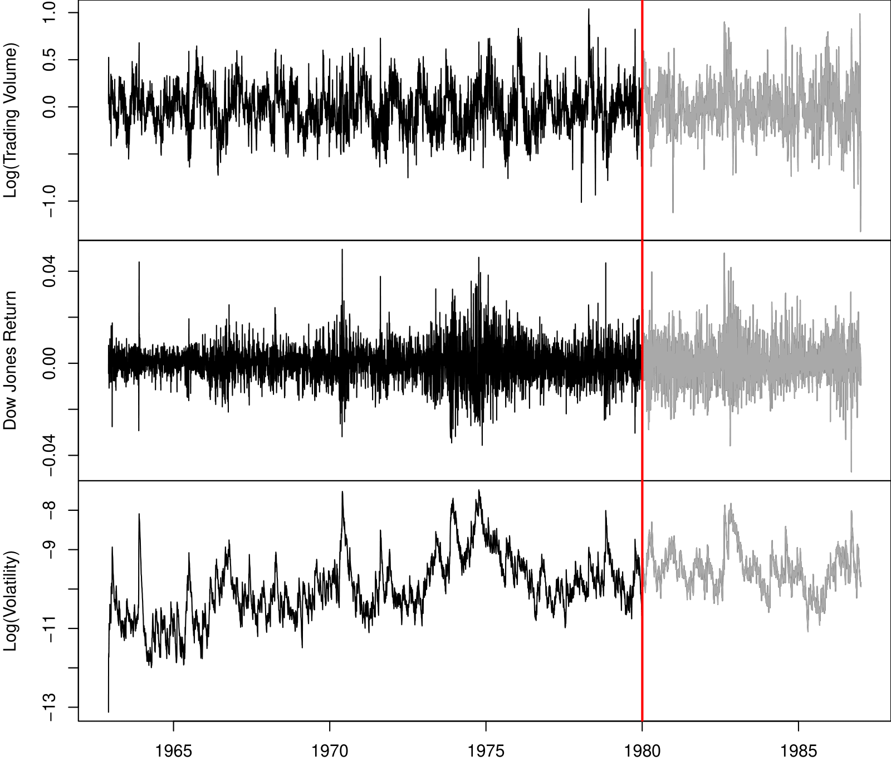
New-York Stock Exchange Data
Three daily time series for the period December 3, 1962, to December 31, 1986 (6,051 trading days):
Log trading volume. This is the fraction of all outstanding shares that are traded on that day, relative to a 100-day moving average of past turnover, on the log scale.
Dow Jones return. This is the difference between the log of the Dow Jones Industrial Index on consecutive trading days.
Log volatility. This is based on the absolute values of daily price movements.
Goal: predict Log trading volume tomorrow, given its observed values up to today, as well as those of Dow Jones return and Log volatility.
These data were assembled by LeBaron and Weigend (1998) IEEE Transactions on Neural Networks, 9(1): 213–220.
Autocorrelation
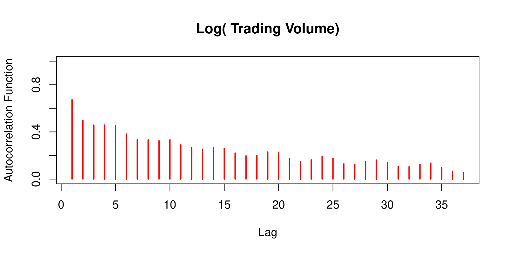
The autocorrelation at lag \(\ell\) is the correlation of all pairs \((v_t, v_{t-\ell})\) that are \(\ell\) trading days apart.
These sizable correlations give us confidence that past values will be helpful in predicting the future.
This is a curious prediction problem: the response \(v_t\) is also a feature \(v_{t-\ell}\)!
RNN Forecaster
We only have one series of data! How do we set up for an RNN?
We extract many short mini-series of input sequences \(\mathbf{X} = \{ X_1, X_2, \ldots, X_L \}\) with a predefined length \(L\) known as the lag:
\[ X_1 = \begin{pmatrix} v_{t-L} \\ r_{t-L} \\ z_{t-L} \end{pmatrix}, \quad X_2 = \begin{pmatrix} v_{t-L+1} \\ r_{t-L+1} \\ z_{t-L+1} \end{pmatrix}, \quad \cdots, \quad X_L = \begin{pmatrix} v_{t-1} \\ r_{t-1} \\ z_{t-1} \end{pmatrix}, \quad \text{and} \quad Y = v_t. \]
Since \(T = 6,051\), with \(L = 5\), we can create 6,046 such \((X, Y)\) pairs.
We use the first 4,281 as training data, and the following 1,770 as test data. We fit an RNN with 12 hidden units per lag step (i.e., per \(A_\ell\)).
RNN Results for NYSE Data
The figure shows predictions and truth for the test period.
\[ R^2 = 0.42 \text{ for RNN} \]
\(R^2 = 0.18\) for the naive approach — uses yesterday’s value of Log trading volume to predict that of today.
Autoregression Forecaster
The RNN forecaster is similar in structure to a traditional autoregression procedure.
\[ \mathbf{y} = \begin{bmatrix} v_{L+1} \\ v_{L+2} \\ v_{L+3} \\ \vdots \\ v_T \end{bmatrix}, \quad \mathbf{M} = \begin{bmatrix} 1 & v_L & v_{L-1} & \cdots & v_1 \\ 1 & v_{L+1} & v_L & \cdots & v_2 \\ 1 & v_{L+2} & v_{L+1} & \cdots & v_3 \\ \vdots & \vdots & \vdots & \ddots & \vdots \\ 1 & v_{T-1} & v_{T-2} & \cdots & v_{T-L} \end{bmatrix}. \]
Fit an OLS regression of \(\mathbf{y}\) on \(\mathbf{M}\), giving:
\[ \hat{v}_t = \hat{\beta}_0 + \hat{\beta}_1 v_{t-1} + \hat{\beta}_2 v_{t-2} + \cdots + \hat{\beta}_L v_{t-L}. \]
Known as an order-\(L\) autoregression model or \(AR(L)\).
For the NYSE data, we can include lagged versions of DJ_return and log_volatility in matrix \(\mathbf{M}\), resulting in \(3L + 1\) columns.
Autoregression Results for NYSE Data
\(R^2 = 0.41 \text{ for } AR(5) \text{ model (16 parameters)}\)
\(R^2 = 0.42 \text{ for RNN model (205 parameters)}\)
\(R^2 = 0.42 \text{ for } AR(5) \text{ model fit by neural network.}\)
\(R^2 = 0.46 \text{ for all models if we include } \textbf{day_of_week} \text{ of day being predicted.}\)
Summary of RNNs
We have presented the simplest of RNNs. Many more complex variations exist.
One variation treats the sequence as a one-dimensional image, and uses CNNs for fitting. For example, a sequence of words using an embedding representation can be viewed as an image, and the CNN convolves by sliding a convolutional filter along the sequence.
Can have additional hidden layers, where each hidden layer is a sequence, and treats the previous hidden layer as an input sequence.
Can have output also be a sequence, and input and output share the hidden units. So called seq2seq learning are used for language translation.
When to Use Deep Learning
When to Use Deep Learning
CNNs have had enormous successes in image classification and modeling, and are starting to be used in medical diagnosis. Examples include digital mammography, ophthalmology, MRI scans, and digital X-rays.
RNNs have had big wins in speech modeling, language translation, and forecasting.
Should we always use deep learning models?
Often the big successes occur when the signal to noise ratio is high — e.g., image recognition and language translation. Datasets are large, and overfitting is not a big problem.
For noisier data, simpler models can often work better:
On the NYSE data, the AR(5) model is much simpler than an RNN, and performed as well.
On the IMDB review data, a linear model fit (e.g. with glmnet) did as well as the neural network, and better than the RNN.
Flexibility vs. Interpretability
Trade-offs between flexibility and interpretability:
As the authors suggest, I also endorse the Occam’s razor principle — we prefer simpler models if they work as well. More interpretable!
Additional Material
- 3Blue1Brown: Neural Networks
- Deep Learning, by Ian Goodfellow and Yoshua Bengio and Aaron Courvill
- Welch Labs: Neural Networks Demystified
- Welch Labs: Learning To See
- Distill: A Gentle Introduction to Graph Neural Networks
- Neural Networks and Deep Learning, by Michael Nielsen
- CITS4012 Natural Language Processing
- Deep Learning with PyTorch Step-by-Step
Summary
- Deep Learning Renaissance
- Neural networks first rose to prominence in the 1980s, waned in the 1990s, then surged again around 2010.
- Advances in computing (GPUs) and availability of massive labeled datasets propelled deep learning success.
- Frameworks (PyTorch vs. TensorFlow)
- PyTorch is known for its dynamic graph and Pythonic syntax; widely used in research.
- TensorFlow has an extensive production ecosystem, ideal for enterprise and deployment.
- Essential Concepts
- Automatic differentiation, gradient descent, and backpropagation are at the core of training neural networks.
- CNNs and RNNs
- CNNs excel in image classification by learning local patterns via convolution and pooling layers.
- RNNs (and variants like LSTM, GRU) handle sequential data for tasks like language modeling and time-series forecasting.
- CNNs excel in image classification by learning local patterns via convolution and pooling layers.
- When to Use Deep Learning
- Works best on large datasets with high signal-to-noise ratio (e.g., image, text).
- Simpler models often perform well on noisier tasks or smaller datasets.
- Over-parameterization can still generalize due to “double-descent” effects.
- Works best on large datasets with high signal-to-noise ratio (e.g., image, text).
- Practical Tips
- Use regularization (dropout, data augmentation, weight decay) to mitigate overfitting.
- Monitor convergence with appropriate learning rates and consider mini-batch stochastic gradient descent.
- Use regularization (dropout, data augmentation, weight decay) to mitigate overfitting.